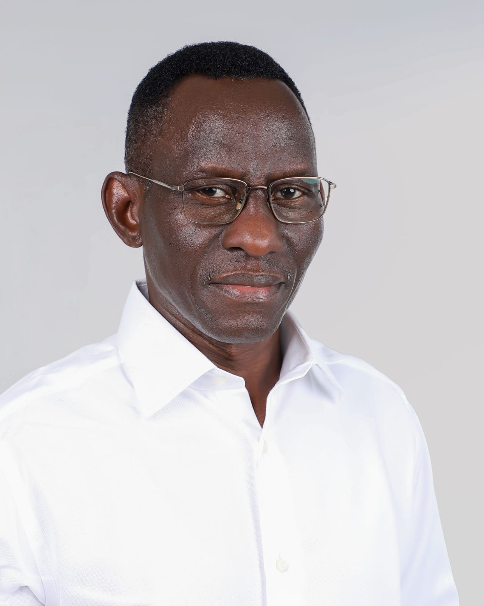
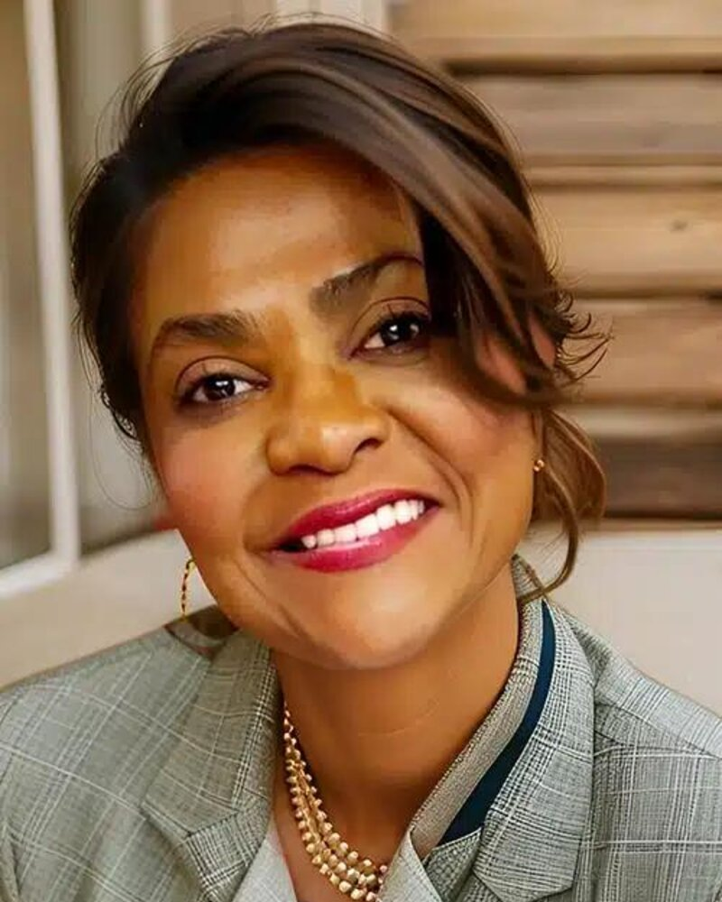
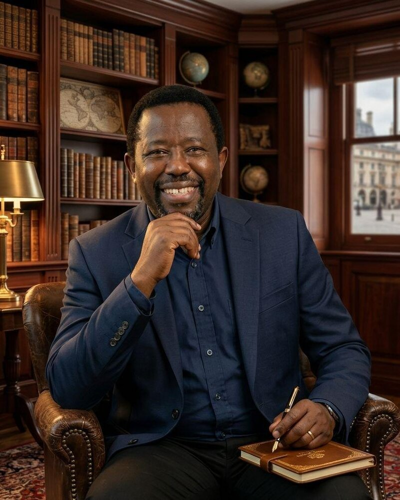
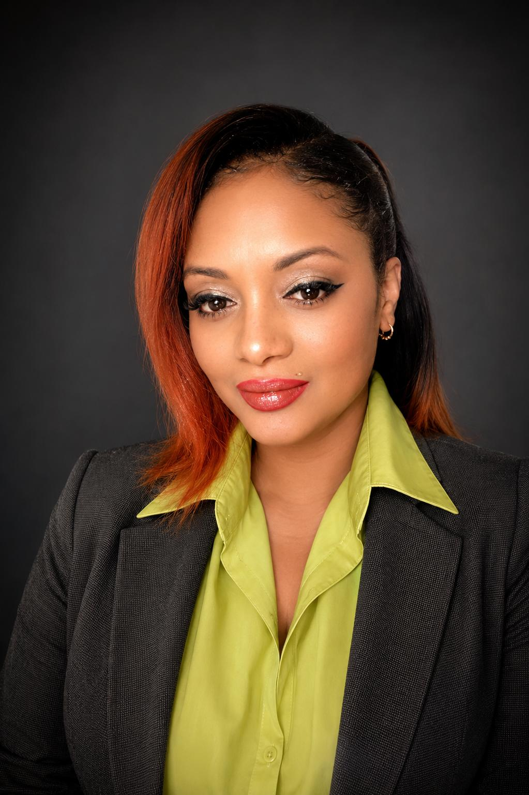

2026 Featured Speakers
Meet some of the distinguished voices participating in the 2026 programme, bringing ideas and experiences across leadership, innovation, wellbeing, enterprise and social impact.


One of Nigeria's most distinguished military leaders, with over four decades of service in national security, strategic leadership, and defence policy. Author of SCARS: Nigeria's Journey and the Boko Haram Conundrum, he continues to influence conversations on leadership, governance, and institutional resilience.
Learn More

An internationally recognized cybersecurity executive, governance and risk strategist, and U.S. Navy veteran with more than 25 years of leadership across technology and executive advisory. She helps leaders make courageous decisions and build resilient organizations in an increasingly digital world.
LinkedIn
With more than two decades of leadership in strategic data management and enterprise risk, he is internationally recognized as the Toghu Marathoner — a Guinness World Record holder using his global platform to advance autism awareness, literacy, and community development.
LinkedIn

An Integrative Psychotherapist, author, and leadership advocate committed to helping individuals build healthier relationships through emotional resilience and self-awareness. As founder of SAB Counselling Service Ltd, her work integrates trauma-informed practice with a deep understanding of human connection.
LinkedIn